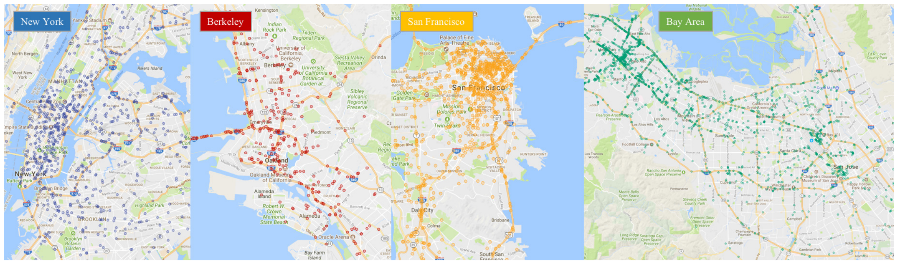

Dataset¶
The dataset selected for this project comes from "BDD100K: A Large-scale Diverse Driving Video Database". Much more detail on this dataset can be found on their website.
The dataset includes 100,000 images from a frontward facing camera with a wide variety of modeling tasks. This includes tasks from the domains of image classification, object detection and image segmentation. This dataset was selected due to the sheer number of images available, the high degree of variety in the images, and the fact that one single dataset could be used for many different applicable tasks.
Below is a small sample of the types of images/labels available in the dataset1:


Additional Dataset History¶
The dataset was originally published in 20182 with a total of 10 tasks available for future authors to test their machine vision models on. For the purposes of this project, an enhanced set of labels were used which were released in a follow project in 2020.
Dataset Bias Consideration¶
As shown below, images for the dataset were collected in major US cities. While capturing the data in these location certainly works well for building a challenging dataset with many targets, it does present a bias when you look to apply the model in other portions of the US. A review of the images did not find many photos that were reflective of suburban or rural geographic locations, and models trained on this dataset are seemingly not likely to generalize well to those areas.

-
Image Source - https://www.bdd100k.com ↩
-
Source - https://arxiv.org/abs/1805.04687 ↩